Solve Applications with Linear Inequalities
Solve Applications with Linear Inequalities
Many real-life situations require us to solve inequalities. In fact, inequality applications are so common that we often do not even realize we are doing algebra. For example, how many gallons of gas can be put in the car for $20? Is the rent on an apartment affordable? Is there enough time before class to go get lunch, eat it, and return? How much money should each family member’s holiday gift cost without going over budget?
The method we will use to solve applications with linear inequalities is very much like the one we used when we solved applications with equations. We will read the problem and make sure all the words are understood. Next, we will identify what we are looking for and assign a variable to represent it. We will restate the problem in one sentence to make it easy to translate into an inequality. Then, we will solve the inequality.
Emma got a new job and will have to move. Her monthly income will be $5,625. To qualify to rent an apartment, Emma’s monthly income must be at least three times as much as the rent. What is the highest rent Emma will qualify for?
Solution
Solution
| Step 1. Read the problem. | |
| Step 2. Identify what we are looking for. | the highest rent Emma will qualify for |
|
Step 3. Name what we are looking for.
Choose a variable to represent that quantity. |
Let the rent. |
|
Step 4. Translate into an inequality. First write a sentence that gives the information to find it. |
Emma's monthly income must be at least three times the rent. |
|
Step 5. Solve the inequality.
Remember, has the same meaning as . |
|
|
Step 6. Check the answer in the problem and make sure it makes sense.
A maximum rent of $1,875 seems reasonable for an income of $5,625. |
|
| Step 7. Answer the question with a complete sentence. | The maximum rent is $1,875. |
Sometimes an application requires the solution to be a whole number, but the algebraic solution to the inequality is not a whole number. In that case, we must round the algebraic solution to a whole number. The context of the application will determine whether we round up or down. To check applications like this, we will round our answer to a number that is easy to compute with and make sure that number makes the inequality true.
Dawn won a mini-grant of $4,000 to buy tablet computers for her classroom. The tablets she would like to buy cost $254.12 each, including tax and delivery. What is the maximum number of tablets Dawn can buy?
Solution
Solution
| Step 1. Read the problem. | |
| Step 2. Identify what we are looking for. | the maximum number of tablets Dawn can buy |
|
Step 3. Name what we are looking for.
Choose a variable to represent that quantity. |
Let the number of tablets. |
|
Step 4. Translate. Write a sentence that gives the information to find it. Translate into an inequality. |
$254.12 times the number of tablets is no more than $4,000.
|
|
Step 5. Solve the inequality.
But must be a whole number of tablets, so round to 15. |
|
|
Step 6. Check the answer in the problem and make sure it makes sense.
Rounding down the price to $250, 15 tablets would cost $3,750, while 16 tablets would be $4,000. So a maximum of 15 tablets at $254.12 seems reasonable. |
|
| Step 7. Answer the question with a complete sentence. | Dawn can buy a maximum of 15 tablets. |
Pete works at a computer store. His weekly pay will be either a fixed amount, $925, or $500 plus 12% of his total sales. How much should his total sales be for his variable pay option to exceed the fixed amount of $925?
Solution
Solution
| Step 1. Read the problem. | |
| Step 2. Identify what we are looking for. | the total sales needed for his variable pay option to exceed the fixed amount of $925 |
|
Step 3. Name what we are looking for.
Choose a variable to represent that quantity. |
Let the total sales. |
|
Step 4. Translate. Write a sentence that gives the information to find it. Translate into an inequality. Remember to convert the percent to a decimal. |
|
| Step 5. Solve the inequality. | |
|
Step 6. Check the answer in the problem and make sure it makes sense.
If we round the total sales up to $4,000, we see that , which is more than $925. |
|
| Step 7. Answer the question with a complete sentence. | The total sales must be more than $3,541.67. |
Sergio and Lizeth have a very tight vacation budget. They plan to rent a car from a company that charges $75 a week plus $0.25 a mile. How many miles can they travel and still keep within their $200 budget?
Solution
Solution
| Step 1. Read the problem. | |
| Step 2. Identify what we are looking for. | the number of miles Sergio and Lizeth can travel |
|
Step 3. Name what we are looking for.
Choose a variable to represent that quantity. |
Let the number of miles. |
|
Step 4. Translate. Write a sentence that gives the information to find it. Translate into an inequality. |
$75 plus 0.25 times the number of miles is less than or equal to $200. |
| Step 5. Solve the inequality. | |
|
Step 6. Check the answer in the problem and make sure it makes sense.
Yes, . |
|
| Step 7. Write a sentence that answers the question. | Sergio and Lizeth can travel 500 miles and still stay on budget. |
A common goal of most businesses is to make a profit. Profit is the money that remains when the expenses have been subtracted from the money earned. In the next example, we will find the number of jobs a small businessman needs to do every month in order to make a certain amount of profit.
Elliot has a landscape maintenance business. His monthly expenses are $1,100. If he charges $60 per job, how many jobs must he do to earn a profit of at least $4,000 a month?
Solution
Solution
| Step 1. Read the problem. | |
| Step 2. Identify what we are looking for. | the number of jobs Elliot needs |
| Step 3. Name what we are looking for. Choose a variable to represent it. | Let the number of jobs. |
| Step 4. Translate Write a sentence that gives the information to find it. | $60 times the number of jobs minus $1,100 is at least $4,000. |
| Translate into an inequality. | |
| Step 5. Solve the inequality. | |
|
Step 6. Check the answer in the problem and make sure it makes sense. If Elliot did 90 jobs, his profit would be , or . This is more than . |
|
| Step 7. Write a sentence that answer the question. | Elliot must work at least 85 jobs. |
Sometimes life gets complicated! There are many situations in which several quantities contribute to the total expense. We must make sure to account for all the individual expenses when we solve problems like this.
Brenda’s best friend is having a destination wedding and the event will require 3 nights in a hotel. Brenda has $500 in savings and can earn $15 an hour babysitting. She expects to pay $350 airfare, $375 for food and entertainment and $60 a night for her share of a hotel room. How many hours must she babysit to have enough money to pay for the trip?
Solution
Solution
| Step 1. Read the problem. | |
| Step 2. Identify what we are looking for. | the number of hours Brenda must babysit |
|
Step 3. Name what we are looking for.
Choose a variable to represent that quantity. |
Let the number of hours. |
|
Step 4. Translate. Write a sentence that gives the information to find it. Translate into an inequality. |
The expenses must be less than or equal to the income.
The cost of airfare plus the cost of food and entertainment and the hotel bill must be less than or equal to the savings plus the amount earned babysitting. |
| Step 5. Solve the inequality. | |
|
Step 6. Check the answer in the problem and make sure it makes sense.
We substitute 27 into the inequality. |
|
| Step 7. Write a sentence that answers the question. | Brenda must babysit at least 27 hours. |
Key Concepts
-
Solving inequalities
- Read the problem.
- Identify what we are looking for.
- Name what we are looking for. Choose a variable to represent that quantity.
- Translate. Write a sentence that gives the information to find it. Translate into an inequality.
- Solve the inequality.
- Check the answer in the problem and make sure it makes sense.
- Answer the question with a complete sentence.
Section Exercises
Practice Makes Perfect
Solve Applications with Linear Inequalities
In the following exercises, solve.
Mona is planning her son’s birthday party and has a budget of $285. The Fun Zone charges $19 per child. How many children can she have at the party and stay within her budget?
Solution
15 children
Carlos is looking at apartments with three of his friends. They want the monthly rent to be no more than $2360. If the roommates split the rent evenly among the four of them, what is the maximum rent each will pay?
A water taxi has a maximum load of 1,800 pounds. If the average weight of one person is 150 pounds, how many people can safely ride in the water taxi?
Solution
12 people
Marcela is registering for her college classes, which cost $105 per unit. How many units can she take to have a maximum cost of $1,365?
Arleen got a $20 gift card for the coffee shop. Her favorite iced drink costs $3.79. What is the maximum number of drinks she can buy with the gift card?
Solution
five drinks
Teegan likes to play golf. He has budgeted $60 next month for the driving range. It costs him $10.55 for a bucket of balls each time he goes. What is the maximum number of times he can go to the driving range next month?
Joni sells kitchen aprons online for $32.50 each. How many aprons must she sell next month if she wants to earn at least $1,000?
Solution
31 aprons
Ryan charges his neighbors $17.50 to wash their car. How many cars must he wash next summer if his goal is to earn at least $1,500?
Keshad gets paid $2,400 per month plus 6% of his sales. His brother earns $3,300 per month. For what amount of total sales will Keshad’s monthly pay be higher than his brother’s monthly pay?
Solution
$15,000
Kimuyen needs to earn $4,150 per month in order to pay all her expenses. Her job pays her $3,475 per month plus 4% of her total sales. What is the minimum Kimuyen’s total sales must be in order for her to pay all her expenses?
Andre has been offered an entry-level job. The company offered him $48,000 per year plus 3.5% of his total sales. Andre knows that the average pay for this job is $62,000. What would Andre’s total sales need to be for his pay to be at least as high as the average pay for this job?
Solution
$400,000
Nataly is considering two job offers. The first job would pay her $83,000 per year. The second would pay her $66,500 plus 15% of her total sales. What would her total sales need to be for her salary on the second offer be higher than the first?
Jake’s water bill is $24.80 per month plus $2.20 per ccf (hundred cubic feet) of water. What is the maximum number of ccf Jake can use if he wants his bill to be no more than $60?
Solution
16 ccf
Kiyoshi’s phone plan costs $17.50 per month plus $0.15 per text message. What is the maximum number of text messages Kiyoshi can use so the phone bill is no more than $56.50?
Marlon’s TV plan costs $49.99 per month plus $5.49 per first-run movie. How many first-run movies can he watch if he wants to keep his monthly bill to be a maximum of $100?
Solution
nine movies
Kellen wants to rent a banquet room in a restaurant for her cousin’s baby shower. The restaurant charges $350 for the banquet room plus $32.50 per person for lunch. How many people can Kellen have at the shower if she wants the maximum cost to be $1,500?
Moshde runs a hairstyling business from her house. She charges $45 for a haircut and style. Her monthly expenses are $960. She wants to be able to put at least $1,200 per month into her savings account order to open her own salon. How many “cut & styles” must she do to save at least $1,200 per month?
Solution
48 cut & styles
Noe installs and configures software on home computers. He charges $125 per job. His monthly expenses are $1,600. How many jobs must he work in order to make a profit of at least $2,400?
Katherine is a personal chef. She charges $115 per four-person meal. Her monthly expenses are $3,150. How many four-person meals must she sell in order to make a profit of at least $1,900?
Solution
44 meals
Melissa makes necklaces and sells them online. She charges $88 per necklace. Her monthly expenses are $3745. How many necklaces must she sell if she wants to make a profit of at least $1,650?
Five student government officers want to go to the state convention. It will cost them $110 for registration, $375 for transportation and food, and $42 per person for the hotel. There is $450 budgeted for the convention in the student government savings account. They can earn the rest of the money they need by having a car wash. If they charge $5 per car, how many cars must they wash in order to have enough money to pay for the trip?
Solution
49 cars
Cesar is planning a 4-day trip to visit his friend at a college in another state. It will cost him $198 for airfare, $56 for local transportation, and $45 per day for food. He has $189 in savings and can earn $35 for each lawn he mows. How many lawns must he mow to have enough money to pay for the trip?
Alonzo works as a car detailer. He charges $175 per car. He is planning to move out of his parents’ house and rent his first apartment. He will need to pay $120 for application fees, $950 for security deposit, and first and last months’ rent at $1,140 per month. He has $1,810 in savings. How many cars must he detail to have enough money to rent the apartment?
Solution
9 cars
Eun-Kyung works as a tutor and earns $60 per hour. She has $792 in savings. She is planning an anniversary party for her parents. She would like to invite 40 guests. The party will cost her $1,520 for food and drinks and $150 for the photographer. She will also have a favor for each of the guests, and each favor will cost $7.50. How many hours must she tutor to have enough money for the party?
Everyday Math
Maximum Load on a Stage In 2014, a high school stage collapsed in Fullerton, California, when 250 students got on stage for the finale of a musical production. Two dozen students were injured. The stage could support a maximum of 12,750 pounds. If the average weight of a student is assumed to be 140 pounds, what is the maximum number of students who could safely be on the stage?
Solution
91 students
Maximum Weight on a Boat In 2004, a water taxi sank in Baltimore harbor and five people drowned. The water taxi had a maximum capacity of 3,500 pounds (25 people with average weight 140 pounds). The average weight of the 25 people on the water taxi when it sank was 168 pounds per person. What should the maximum number of people of this weight have been?
Wedding Budget Adele and Walter found the perfect venue for their wedding reception. The cost is $9,850 for up to 100 guests, plus $38 for each additional guest. How many guests can attend if Adele and Walter want the total cost to be no more than $12,500?
Solution
169 guests
Shower Budget Penny is planning a baby shower for her daughter-in-law. The restaurant charges $950 for up to 25 guests, plus $31.95 for each additional guest. How many guests can attend if Penny wants the total cost to be no more than $1,500?
Writing Exercises
Find your last month’s phone bill and the hourly salary you are paid at your job. (If you do not have a job, use the hourly salary you would realistically be paid if you had a job.) Calculate the number of hours of work it would take you to earn at least enough money to pay your phone bill by writing an appropriate inequality and then solving it.
Solution
Answers will vary.
Find out how many units you have left, after this term, to achieve your college goal and estimate the number of units you can take each term in college. Calculate the number of terms it will take you to achieve your college goal by writing an appropriate inequality and then solving it.
Self Check
ⓐ After completing the exercises, use this checklist to evaluate your mastery of the objectives of this section.
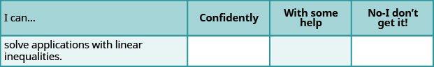
ⓑ What does this checklist tell you about your mastery of this section? What steps will you take to improve?
Chapter 3 Review Exercises
3.1 Using a Problem Solving Strategy
Approach Word Problems with a Positive Attitude
In the following exercises, reflect on your approach to word problems.
How has your attitude towards solving word problems changed as a result of working through this chapter? Explain.
Solution
answers will vary
Did the problem-solving strategy help you solve word problems in this chapter? Explain.
Use a Problem-Solving Strategy for Word Problems
In the following exercises, solve using the problem-solving strategy for word problems. Remember to write a complete sentence to answer each question.
Three-fourths of the people at a concert are children. If there are 87 children, what is the total number of people at the concert?
Solution
116
There are nine saxophone players in the band. The number of saxophone players is one less than twice the number of tuba players. Find the number of tuba players.
Solve Number Problems
In the following exercises, solve each number word problem.
The sum of a number and three is forty-one. Find the number.
Solution
38
Twice the difference of a number and ten is fifty-four. Find the number.
One number is nine less than another. Their sum is negative twenty-seven. Find the numbers.
Solution
One number is eleven more than another. If their sum is increased by seventeen, the result is 90. Find the numbers.
One number is two more than four times another. Their sum is Find the numbers.
Solution
The sum of two consecutive integers is Find the numbers.
Find three consecutive integers whose sum is
Solution
Find three consecutive even integers whose sum is 234.
Find three consecutive odd integers whose sum is 51.
Solution
15, 17, 19
Koji has $5,502 in his savings account. This is $30 less than six times the amount in his checking account. How much money does Koji have in his checking account?
3.2 Solve Percent Applications
Translate and Solve Basic Percent Equations
In the following exercises, translate and solve.
What number is 67% of 250?
Solution
167.5
300% of 82 is what number?
12.5% of what number is 20?
Solution
160
72 is 30% of what number?
What percent of 125 is 150?
Solution
120%
127.5 is what percent of 850?
Solve Percent Applications
In the following exercises, solve.
The bill for Dino’s lunch was $19.45. He wanted to leave 20% of the total bill as a tip. How much should the tip be?
Solution
$3.89
Reza was very sick and lost 15% of his original weight. He lost 27 pounds. What was his original weight?
Dolores bought a crib on sale for $350. The sale price was 40% of the original price. What was the original price of the crib?
Solution
$875
Jaden earns $2,680 per month. He pays $938 a month for rent. What percent of his monthly pay goes to rent?
Find Percent Increase and Percent Decrease
In the following exercises, solve.
Angel’s got a raise in his annual salary from $55,400 to $56,785. Find the percent increase.
Solution
2.5%
Rowena’s monthly gasoline bill dropped from $83.75 last month to $56.95 this month. Find the percent decrease.
Solve Simple Interest Applications
In the following exercises, solve.
Winston deposited $3,294 in a bank account with interest rate 2.6%. How much interest was earned in 5 years?
Solution
$428.22
Moira borrowed $4,500 from her grandfather to pay for her first year of college. Three years later, she repaid the $4,500 plus $243 interest. What was the rate of interest?
Jaime’s refrigerator loan statement said he would pay $1,026 in interest for a 4-year loan at 13.5%. How much did Jaime borrow to buy the refrigerator?
Solution
$1,900
In 12 years, a bond that paid 6.35% interest earned $7,620 interest. What was the principal of the bond?
Solve Applications with Discount or Mark-up
In the following exercises, find the sale price.
The original price of a handbag was $84. Carole bought it on sale for $21 off.
Solution
$63
Marian wants to buy a coffee table that costs $495. Next week the coffee table will be on sale for $149 off.
In the following exercises, find ⓐ the amount of discount and ⓑ the sale price.
Emmett bought a pair of shoes on sale at 40% off from an original price of $138.
Solution
ⓐ $55.20 ⓑ $82.80
Anastasia bought a dress on sale at 75% off from an original price of $280.
In the following exercises, find ⓐ the amount of discount and ⓑ the discount rate. (Round to the nearest tenth of a percent, if needed.)
Zack bought a printer for his office that was on sale for $380. The original price of the printer was $450.
Solution
ⓐ $70 ⓑ 15.6%
Lacey bought a pair of boots on sale for $95. The original price of the boots was $200.
In the following exercises, find ⓐ the amount of the mark-up and ⓑ the list price.
Nga and Lauren bought a chest at a flea market for $50. They re-finished it and then added a 350% mark-up.
Solution
ⓐ $175 ⓑ $225
Carly bought bottled water for $0.24 per bottle at the discount store. She added a 75% mark-up before selling them at the football game.
3.3 Solve Mixture Applications
Solve Coin Word Problems
In the following exercises, solve each coin word problem.
Francie has $4.35 in dimes and quarters. The number of dimes is five more than the number of quarters. How many of each coin does she have?
Solution
16 dimes, 11 quarters
Scott has $0.39 in pennies and nickels. The number of pennies is eight times the number of nickels. How many of each coin does he have?
Paulette has $140 in $5 and $10 bills. The number of $10 bills is one less than twice the number of $5 bills. How many of each does she have?
Solution
six $5 bills, 11 $10 bills
Lenny has $3.69 in pennies, dimes, and quarters. The number of pennies is three more than the number of dimes. The number of quarters is twice the number of dimes. How many of each coin does he have?
Solve Ticket and Stamp Word Problems
In the following exercises, solve each ticket or stamp word problem.
A church luncheon made $842. Adult tickets cost $10 each and children’s tickets cost $6 each. The number of children was 12 more than twice the number of adults. How many of each ticket were sold?
Solution
35 adults, 82 children
Tickets for a basketball game cost $2 for students and $5 for adults. The number of students was three less than 10 times the number of adults. The total amount of money from ticket sales was $619. How many of each ticket were sold?
125 tickets were sold for the jazz band concert for a total of $1,022. Student tickets cost $6 each and general admission tickets cost $10 each. How many of each kind of ticket were sold?
Solution
57 students, 68 adults
One afternoon the water park sold 525 tickets for a total of $13,545. Child tickets cost $19 each and adult tickets cost $40 each. How many of each kind of ticket were sold?
Ana spent $4.06 buying stamps. The number of $0.41 stamps she bought was five more than the number of $0.26 stamps. How many of each did she buy?
Solution
three $0.26 stamps, eight $0.41 stamps
Yumi spent $34.15 buying stamps. The number of $0.56 stamps she bought was 10 less than four times the number of $0.41 stamps. How many of each did she buy?
Solve Mixture Word Problems
In the following exercises, solve each mixture word problem.
Marquese is making 10 pounds of trail mix from raisins and nuts. Raisins cost $3.45 per pound and nuts cost $7.95 per pound. How many pounds of raisins and how many pounds of nuts should Marquese use for the trail mix to cost him $6.96 per pound?
Solution
2.2 lb. of raisins, 7.8 lb. of nuts
Amber wants to put tiles on the backsplash of her kitchen counters. She will need 36 square feet of tile. She will use basic tiles that cost $8 per square foot and decorator tiles that cost $20 per square foot. How many square feet of each tile should she use so that the overall cost of the backsplash will be $10 per square foot?
Shawn has $15,000 to invest. She will put some of it into a fund that pays 4.5% annual interest and the rest in a certificate of deposit that pays 1.8% annual interest. How much should she invest in each account if she wants to earn 4.05% annual interest on the total amount?
Solution
$12,500 at 4.5%, $2,500 at 1.8%
Enrique borrowed $23,500 to buy a car. He pays his uncle 2% interest on the $4,500 he borrowed from him, and he pays the bank 11.5% interest on the rest. What average interest rate does he pay on the total $23,500? (Round your answer to the nearest tenth of a percent.)
3.4 Solve Geometry Applications: Triangles, Rectangles and the Pythagorean Theorem
Solve Applications Using Triangle Properties
In the following exercises, solve using triangle properties.
The measures of two angles of a triangle are 22 and 85 degrees. Find the measure of the third angle.
Solution
The playground at a shopping mall is a triangle with perimeter 48 feet. The lengths of two sides are 19 feet and 14 feet. How long is the third side?
A triangular road sign has base 30 inches and height 40 inches. What is its area?
Solution
600 square inches
What is the height of a triangle with area 67.5 square meters and base 9 meters?
One angle of a triangle is more than the smallest angle. The largest angle is the sum of the other angles. Find the measures of all three angles.
Solution
One angle of a right triangle measures What is the measure of the other angles of the triangle?
The measure of the smallest angle in a right triangle is less than the measure of the next larger angle. Find the measures of all three angles.
Solution
The perimeter of a triangle is 97 feet. One side of the triangle is eleven feet more than the smallest side. The third side is six feet more than twice the smallest side. Find the lengths of all sides.
Use the Pythagorean Theorem
In the following exercises, use the Pythagorean Theorem to find the length of the hypotenuse.
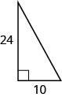
Solution
26
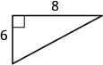
In the following exercises, use the Pythagorean Theorem to find the length of the missing side. Round to the nearest tenth, if necessary.
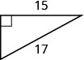
Solution
8
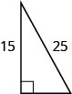
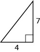
Solution
8.1
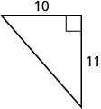
In the following exercises, solve. Approximate to the nearest tenth, if necessary.
Sergio needs to attach a wire to hold the antenna to the roof of his house, as shown in the figure. The antenna is 8 feet tall and Sergio has 10 feet of wire. How far from the base of the antenna can he attach the wire?
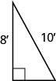
Solution
Seong is building shelving in his garage. The shelves are 36 inches wide and 15 inches tall. He wants to put a diagonal brace across the back to stabilize the shelves, as shown. How long should the brace be?
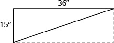
Solve Applications Using Rectangle Properties
In the following exercises, solve using rectangle properties.
The length of a rectangle is 36 feet and the width is 19 feet. Find the ⓐ perimeter ⓑ area.
Solution
ⓐ 110 ft. ⓑ 684 sq. ft.
A sidewalk in front of Kathy’s house is in the shape of a rectangle four feet wide by 45 feet long. Find the ⓐ perimeter ⓑ area.
The area of a rectangle is 2356 square meters. The length is 38 meters. What is the width?
Solution
62 m
The width of a rectangle is 45 centimeters. The area is 2,700 square centimeters. What is the length?
The length of a rectangle is 12 cm more than the width. The perimeter is 74 cm. Find the length and the width.
Solution
24.5 cm, 12.5 cm
The width of a rectangle is three more than twice the length. The perimeter is 96 inches. Find the length and the width.
3.5 Solve Uniform Motion Applications
Solve Uniform Motion Applications
In the following exercises, solve.
When Gabe drives from Sacramento to Redding it takes him 2.2 hours. It takes Elsa 2 hours to drive the same distance. Elsa’s speed is seven miles per hour faster than Gabe’s speed. Find Gabe’s speed and Elsa’s speed.
Solution
Gabe 70 mph, Elsa 77 mph
Louellen and Tracy met at a restaurant on the road between Chicago and Nashville. Louellen had left Chicago and drove 3.2 hours towards Nashville. Tracy had left Nashville and drove 4 hours towards Chicago, at a speed one mile per hour faster than Louellen’s speed. The distance between Chicago and Nashville is 472 miles. Find Louellen’s speed and Tracy’s speed.
Two busses leave Amarillo at the same time. The Albuquerque bus heads west on the I-40 at a speed of 72 miles per hour, and the Oklahoma City bus heads east on the I-40 at a speed of 78 miles per hour. How many hours will it take them to be 375 miles apart?
Solution
2.5 hours
Kyle rowed his boat upstream for 50 minutes. It took him 30 minutes to row back downstream. His speed going upstream is two miles per hour slower than his speed going downstream. Find Kyle’s upstream and downstream speeds.
At 6:30, Devon left her house and rode her bike on the flat road until 7:30. Then she started riding uphill and rode until 8:00. She rode a total of 15 miles. Her speed on the flat road was three miles per hour faster than her speed going uphill. Find Devon’s speed on the flat road and riding uphill.
Solution
flat road 11 mph, uphill 8 mph
Anthony drove from New York City to Baltimore, a distance of 192 miles. He left at 3:45 and had heavy traffic until 5:30. Traffic was light for the rest of the drive, and he arrived at 7:30. His speed in light traffic was four miles per hour more than twice his speed in heavy traffic. Find Anthony’s driving speed in heavy traffic and light traffic.
3.6 Solve Applications with Linear Inequalities
Solve Applications with Linear Inequalities
In the following exercises, solve.
Julianne has a weekly food budget of $231 for her family. If she plans to budget the same amount for each of the seven days of the week, what is the maximum amount she can spend on food each day?
Solution
$33 per day
Rogelio paints watercolors. He got a $100 gift card to the art supply store and wants to use it to buy canvases. Each canvas costs $10.99. What is the maximum number of canvases he can buy with his gift card?
Briana has been offered a sales job in another city. The offer was for $42,500 plus 8% of her total sales. In order to make it worth the move, Briana needs to have an annual salary of at least $66,500. What would her total sales need to be for her to move?
Solution
at least $300,000
Renee’s car costs her $195 per month plus $0.09 per mile. How many miles can Renee drive so that her monthly car expenses are no more than $250?
Costa is an accountant. During tax season, he charges $125 to do a simple tax return. His expenses for buying software, renting an office, and advertising are $6,000. How many tax returns must he do if he wants to make a profit of at least $8,000?
Solution
at least 112 jobs
Jenna is planning a 5-day resort vacation with three of her friends. It will cost her $279 for airfare, $300 for food and entertainment, and $65 per day for her share of the hotel. She has $550 saved towards her vacation and can earn $25 per hour as an assistant in her uncle’s photography studio. How many hours must she work in order to have enough money for her vacation?
Practice Test
Four-fifths of the people on a hike are children. If there are 12 children, what is the total number of people on the hike?
Solution
15
One number is three more than twice another. Their sum is Find the numbers.
The sum of two consecutive odd integers is Find the numbers.
Solution
Marla’s breakfast was 525 calories. This was 35% of her total calories for the day. How many calories did she have that day?
Humberto’s hourly pay increased from $16.25 to $17.55. Find the percent increase.
Solution
8%
Melinda deposited $5,985 in a bank account with an interest rate of 1.9%. How much interest was earned in 2 years?
Dotty bought a freezer on sale for $486.50. The original price of the freezer was $695. Find ⓐ the amount of discount and ⓑ the discount rate.
Solution
ⓐ $208.50 ⓑ 30%
Bonita has $2.95 in dimes and quarters in her pocket. If she has five more dimes than quarters, how many of each coin does she have?
At a concert, $1,600 in tickets were sold. Adult tickets were $9 each and children’s tickets were $4 each. If the number of adult tickets was 30 less than twice the number of children’s tickets, how many of each kind were sold?
Solution
140 adult, 85 children
Kim is making eight gallons of punch from fruit juice and soda. The fruit juice costs $6.04 per gallon and the soda costs $4.28 per gallon. How much fruit juice and how much soda should she use so that the punch costs $5.71 per gallon?
The measure of one angle of a triangle is twice the measure of the smallest angle. The measure of the third angle is 14 more than the measure of the smallest angle. Find the measures of all three angles.
Solution
What is the height of a triangle with area 277.2 square inches and base 44 inches?
In the following exercises, use the Pythagorean Theorem to find the length of the missing side. Round to the nearest tenth, if necessary.
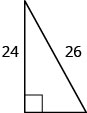
Solution
10
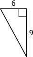
A baseball diamond is really a square with sides of 90 feet. How far is it from home plate to second base, as shown?
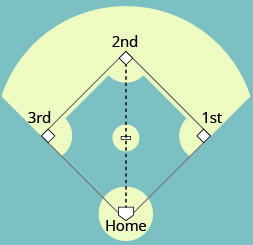
Solution
127.3 ft.
The length of a rectangle is two feet more than five times the width. The perimeter is 40 feet. Find the dimensions of the rectangle.
Two planes leave Dallas at the same time. One heads east at a speed of 428 miles per hour. The other plane heads west at a speed of 382 miles per hour. How many hours will it take them to be 2,025 miles apart?
Solution
2.5 hours
Leon drove from his house in Cincinnati to his sister’s house in Cleveland, a distance of 252 miles. It took him hours. For the first half hour he had heavy traffic, and the rest of the time his speed was five miles per hour less than twice his speed in heavy traffic. What was his speed in heavy traffic?
Chloe has a budget of $800 for costumes for the 18 members of her musical theater group. If all the costumes are the same price, what is the maximum she can spend for each costume?
Solution
at most $44.44 per costume
Frank found a rental car deal online for $49 per week plus $0.24 per mile. How many miles could he drive if he wants the total cost for one week to be no more than $150?